After the completion of this lesson, students will be able to:
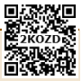
Lofty mountains covered with greenish vegetation, magnificent trees reaching the clouds, beautiful streams drifting down the valleys, bluish sea water roaring towards the coast and the radiant sky in the morning being filled with golden red color, all give delight to our eyes and peace to our mind. But, can we see them all without light? No, because, we can see things around us only when the light reflected by them reaches our eyes. What is light?
Light is a form of energy and it travels in a straight line. You have studied in your lower classes, how it is reflected by the polished surfaces such as plane mirrors. This reflecting property of light is applied in various devises that we use in our daily life. In this lesson, you will study about types of mirrors like spherical mirrors and parabolic mirrors. You will also study about the laws of reflection and the laws of refraction and some of the optical instruments, such as periscope and kaleidoscope, which work on these principles.
We use mirrors in our daily life for various purposes. Mainly, we use them for beautifying us. The mirror is an optical device with a polished surface that reflects the light falling on it. A typical mirror is a glass sheet coated with aluminium or silver on one of its sides to produce an image. Mirrors have a plane or curved surface. Curved mirrors have surfaces that are spherical, cylindrical, parabolic and ellipsoid. The shape of a mirror determines the type of image it forms. Plane mirrors form the perfect image of an object. Whereas, curved mirrors produce images that are either enlarged or diminished.
Do you know?
Method of coating a glass plate with a thin layer of reflecting metals was in practice during the 16th century in Venice, Italy. They used an amalgam of tin and mercury for this purpose. Nowadays, a thin layer of molten aluminium or silver is used for coating glass plates that will then become mirrors.
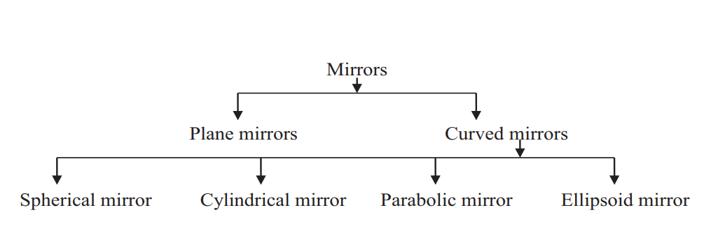
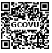
Spherical mirrors are one form of curved mirrors. If the curved mirror is a part of a sphere, then it is called a ‘spherical mirror’. It resembles the shape of a piece cut out from a spherical surface. One side of this mirror is silvered and the reflection of light occurs at the other side.
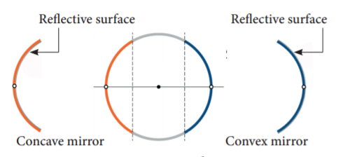
Concave mirror
A spherical mirror, in which the reflection of light occurs at its concave surface, is called a concave mirror. These mirrors magnify the object placed close to them. The most common example of a concave mirror is the make-up mirror.
Convex mirror
A spherical mirror, in which the reflection of light occurs at its convex surface, is called a convex mirror. The image formed by these mirrors is smaller than the object. Most common convex mirrors are rear viewing mirrors used in vehicles.
Do you know?
Convex mirrors used in vehicles as rear-view mirrors are labeled with the safety warning: ‘Objects in the mirror are closer than they appear’. This is because inside the mirrors, vehicles will appear to be coming at a long distance.
A parabolic mirror, which is in the shape of a parabola, is one type of curved mirror. It has a concave reflecting surface and this surface directs the entire incident beam of light to converge at its focal point.
In the same way, light rays generated by the source placed at the focal point will fall on this surface and they will be diverged in a direction, which is parallel to the principal axis of the parabolic mirror. Hence, the light rays will be reflected to travel a long distance, without getting diminished.
Parabolic mirrors, also known as parabolic reflectors, are used to collect or project light energy, heat energy, sound energy and radio waves. They are used in reflecting telescopes, radio telescopes and parabolic microphones. They are also used in solar cookers and solar water heaters.
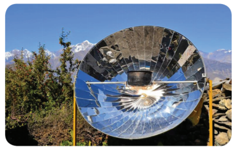
Do you know?
The principle behind the working of a parabolic mirror has been known since the Greco-Roman times. The first mention of these structures was found in the book, ‘On Burning Mirrors’, written by the mathematician Diocles. They were also studied in the 10th century, by a physicist called Ibn Sahl. The first parabolic mirrors were constructed by Heinrich Hertz, a German physicist, in the form of reflector antennae in the year 1888.
In order to understand the image formation in spherical mirrors, we need to know about some of the terms related to them.
Center of Curvature
It is the center of the sphere from which the mirror is made. It is denoted by the letter C in the ray diagrams. (A ray diagram represents the formation of an image by the spherical mirror. You will study about them in the higher classes).
Pole
It is the geometric centre of the spherical mirror. It is denoted by the letter P.
Radius of Curvature
It is the distance between the center of the sphere and the vertex. It is shown by the letter R in ray diagrams (The vertex is the point on the mirror’s surface where the principal axis meets the mirror. It is also called as ‘pole’).
Principal Axis
The line joining the pole of the mirror and its center of curvature is called principal axis.
Focus
When a beam of light is incident on a spherical mirror, the reflected rays converge (concave mirror) at or appear to diverge from (convex mirror) a point on the principal axis. This point is called the ‘focus’ or ‘principal focus’. It is also known as the focal point. It is denoted by the letter F in ray diagrams.
Focal length
The distance between the pole and the principal focus is called focal length (f) of a spherical mirror.
There is a relation between the focal length of a spherical mirror and its radius of curvature. The focal length is half of the radius of curvature.
Focal length equal to Radius of curvature by 2.
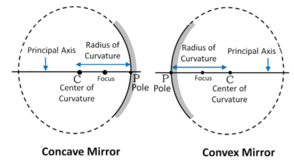
Problem 1
The radius of curvature of a spherical mirror is 20 centimeter. Find its focal length.
Solution
Radius of curvature equal to 20 centimeter
Focal length (f) equal to Radius of curvature by 2.
Equal to R by 2 equal to 20 by 2 equal to 10 centimeter.
Problem 2
Focal length of a spherical mirror is 7 centimeter. What is its radius of curvature?
Solution
Radius of curvature (R) equal to 2 into Focal length
Equal to 2 into 7 equal to 14 centimeter
Images formed by spherical mirrors are of two types: real image and virtual image. Real images can be formed on a screen, while virtual images cannot be formed on a screen. Image formed by a convex mirror is always erect, virtual and diminished in size. As a result, images formed by these mirrors cannot be projected on a screen.
The characteristics of an image are determined by the location of the object. As the object gets closer to a concave mirror, the image gets larger, until attaining approximately the size of the object, when it reaches the centre of curvature of the mirror. As the object moves away, the image diminishes in size and gets gradually closer to the focus, until it is reduced to a point at the focus when the object is at an infinite distance from the mirror. The size and nature of the image formed by a convex mirror are given in Table 3 point 1.
Concave mirrors form a real image and it can be caught on a screen. Unlike convex mirrors, concave mirrors show different image types. Depending on the position of the object in front of the mirror, the position, size and nature of the image will vary. Table 3 point 2 provides a summary of images formed by a concave mirror.
You can observe from the table that a concave mirror always forms a real and inverted image except when the object is placed between the focus and the pole of the mirror. In this position, it forms a virtual and erect image.
Activity 1
Take a curved silver spoon and see the image formed by it. Now, turn it and find the image formed. Do you find any difference? Find out the reason.
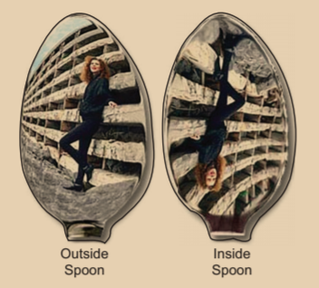
Table 3 point 1 shows the Image formed by a convex mirror
Position of the Object |
Position of the Image |
Image Size |
Nature of the Image |
At infinity |
At F |
Highly diminished, point sized |
Virtual and erect |
Between infinity and the pole (P) |
Between P and F |
Diminished |
Virtual and erect |
Table 3 point 2 shows the Image formed by a concave mirror
Position of the Object |
Position of the Image |
Image Size |
Nature of the Image |
At infinity |
At F |
Highly diminished |
Real and inverted |
Beyond C |
Between C and F |
Diminished |
Real and inverted |
At C |
At C |
Same size as the object |
Real and inverted |
Between C and F |
Beyond C |
Magnified |
Real and inverted |
At F |
At infinity |
Highly magnified |
Real and inverted |
Between F and P |
Behind the mirror |
Magnified |
Virtual and erect |
Concave mirror
1. Concave mirrors are used while applying make-up or shaving, as they provide a magnified image.
2. They are used in torches, search lights and head lights as they direct the light to a long distance.
3. They can collect the light from a larger area and focus it into a small spot. Hence, they are used in solar cookers.
4. They are used as head mirrors by doctors to examine the eye, ear, nose and throat as they provide a shadow-free illumination of the organ.
5. They are also used in reflecting telescopes
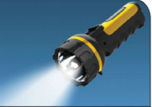
Convex mirror
1. Convex mirrors are used in vehicles as rear view mirrors because they give an upright image and provide a wider field of view as they are curved outwards.
2. They are found in the hallways of various buildings including hospitals, hotels, schools and stores. They are usually mounted on a wall or ceiling where hallways make sharp turns.
3. They are also used on roads where there are sharp curves and turns.
Activity 2: List out various convex and concave mirrors used in daily life.
Activity 3: Take a plane mirror and focus the light coming from the Sun on a wall. Can you see a bright spot on the wall? How does it occur? It is because the light rays falling on the mirror are bounced onto the wall. Can you produce the same bright spot with the help of any other object having a rough surface?
Not all the objects can produce the same effect as produced by the plane mirror. A ray of light, falling on a body having a shiny, polished and smooth surface alone is bounced back. This bouncing back of the light rays as they fall on the smooth, shiny and polished surface is called reflection.
Reflection involves two rays: incident ray and reflected ray. The incident ray is the light ray in a medium falling on the shiny surface of a reflecting body. After falling on the surface, this ray returns into the same medium. This ray is called the reflected ray. An imaginary line perpendicular to the reflecting surface, at the point of incidence of the light ray, is called the normal.
The relation between the incident ray, the reflected ray and the normal is given as the laws of reflection. The laws of reflection are as follows:
• The incident ray, the reflected ray and the normal at the point of incidence, all lie in the same plane.
• The angle of incidence (i) and the angle of reflection (r) are always equal.
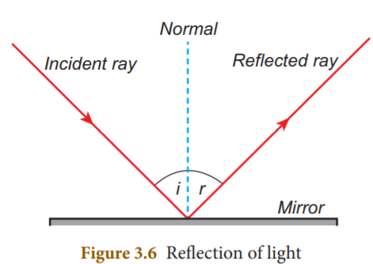
Do you know?
Silver metal is the best reflector of light. That is why a thin layer of silver is deposited on the side of materials like plane glass sheets, to make mirrors.
We have learnt that not all bodies can reflect light rays. The amount of reflection of light depends on the nature of the reflecting surface of the body. Based on the nature of the surface, reflection can be classified into two types namely, regular reflection and irregular reflection.
When a beam of light (collection of parallel rays) falls on a smooth surface, it gets reflected. After reflection, the reflected rays will be parallel to each other. Here, the angle of incidence and the angle of reflection of each ray will be equal. Hence, the law of reflection is obeyed in this case and thus a clear image is formed. This reflection is called ‘regular reflection’ or ‘specular reflection’. Example: Reflection of light by a plane mirror and reflection of light from the surface of still water.
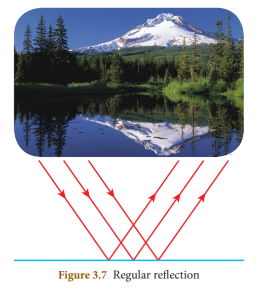
In the case of a body having a rough or irregular surface, each region of the surface is inclined at different angles. When light falls on such a surface, the light rays are reflected at different angles. In this case, the angle of incidence and the angle of reflection of each ray are not equal. Hence, the law of reflection is not obeyed in this case and thus the image is not clear. Such a reflection is called ‘irregular reflection’ or ‘diffused reflection’. Example: Reflection of light from a wall.
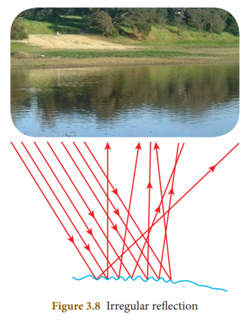
Activity 4:
Take two plane mirrors and keep them perpendicular to each other. Place an object between them. You can see the images of the object. How many images do you see in the mirrors? You can see three images. How is it possible to have three images with two mirrors?
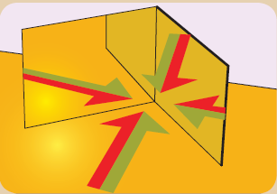
In the activity given above, you observed that for an object kept in between two plane mirrors, which were inclined to each other, you could see many images. This is because, the ‘image’ formed by one mirror acts as an ‘object’ for the other mirror. The image formed by the first mirror acts as an object for the second mirror and the image formed by the second mirror acts as an object for the first mirror. Thus, we have three images of a single body. This is known as multiple reflection. This type of reflections can be seen in show rooms and saloons.
The number of images formed, depends on the angle of inclination of the mirrors. If the angle between the two mirrors is a factor of 360 degree, then the total number of reflections is finite. If θ (Theta) is the angle of inclination of the plane mirrors, the number of images formed is equal to 360 degree by theta (θ) minus 1. As you decrease this angle, the number of images formed increases. When they are parallel to each other, the number of images formed becomes infinite.
Problem 3
If two plane mirrors are inclined to each other at an angle of 90°, find the number of images formed.
Solution
Angle of inclination equal to 90 degree
Number of images formed equal to 360 degree by theta (θ) minus 1
Equal to 360 degree by 90 degree minus 1 equal to 4 minus 1 equal to 3
It is a device which functions on the principle of multiple reflection of light, to produce numerous patterns of images. It has two or more mirrors inclined to each other. It can be designed from inexpensive materials. The colourful image patterns formed by this will be pleasing to you. This instrument is used as a toy for children.
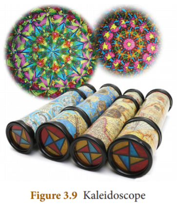
Activity 5:
Take three equal sized plane mirror strips and arrange them in such a way that they form an equilateral triangle. Cover the sides of the mirrors with a chart paper. In the same manner cover the bottom of the mirrors also. Put some coloured things such as pieces of bangles and beads inside it. Now, cover the top portion with the chart paper and make a hole in it to see. You can wrap the entire piece with coloured papers to make it attractive. Now, rotate it and see through its opening. You can see the beautiful patterns.
Caution: Be careful while handling the glass pieces. Do this under the supervision of your teacher.
It is an instrument used for viewing bodies or ships, which are over and around another body or a submarine. It is based on the principle of the law of reflection of light. It consists of a long outer case and inside this case mirrors or prisms are kept at each end, inclined at an angle of 45 degree. Light coming from the distant body, falls on the mirror at the top end of the periscope and gets reflected vertically downward. This light is reflected again by the second mirror kept at the bottom, so as to travel horizontally and reach the eye of the observer. In some complex periscopes, optic fibre is used instead of mirrors for obtaining a higher resolution. The distance between the mirrors varies depending on the purpose.
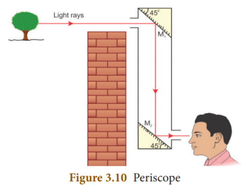
Uses
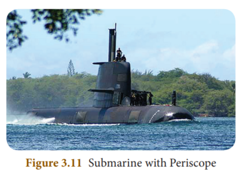
We know that when a light ray falls on a polished surface placed in air, it is reflected into the air itself. When it falls on a transparent material, it is not reflected completely, but a part of it is reflected, a part of it is absorbed and most of the light passes through it. Through air, light travels with a speed of 3 into 10 power 8 m s power minus 1, but it cannot travel with the same speed in water or glass, because, optically denser medium such as water and glass offer some resistance to the light rays.
So, light rays travelling from a rarer medium like air into a denser medium like glass or water are deviated from their straight line path. This bending of light about the normal, at the point of incidence; as it passes from one transparent medium to another is called refraction of light.
When a light ray travels from the rarer medium into the denser medium, it bends towards the normal and when it travels from the denser medium into the rarer medium, it bends away from the normal. You can observe this phenomenon with the help of the activity given below.
Activity 6:
Take a glass beaker, fill it with water and place a pencil in it. Now, look at the pencil through the beaker. Does it appear straight? No. It will appear to be bent at the surface of the water. Why?
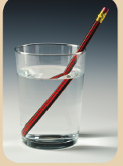
In this activity, the light rays actually travel from the water (a denser medium) into the air (a rarer medium). As you saw earlier, when a light ray travels from a denser medium to a rarer medium, it is deviated from its straight line path. So, the pencil appears to be bent when you see it through the glass of water.
Refraction of light in a medium depends on the speed of light in that medium. When the speed of light in a medium is more, the bending is less and when the speed of light is less, the bending is more.
The amount of refraction of light in a medium is denoted by a term known as refractive index of the medium, which is the ratio of the speed of light in the air to the speed of light in that particular medium. It is also known as the absolute refractive index and it is denoted by the Greek letter ‘mew’ (pronounced as ‘mew’).
μ (mew) equal to Speed of light in air (c ) by Speed of light in the medium (v)
Refractive index is a ratio of two similar quantities (speed) and so, it has no unit. Since, the speed of light in any medium is less than its speed in air, refractive index of any transparent medium is always greater than 1. Refractive indices of some common substances are given in Table 3 point 3.
Substances |
Refractive index |
Air |
1.0 |
Water |
1.33 |
Ether |
1.36 |
Kerosene |
1.41 |
Ordinary Glass |
1.5 |
Quartz |
1.56 |
Diamond |
2.41 |
In general, the refractive index of one medium with respect to another medium is given by the ratio of their absolute refractive indices.
1 mew 2 equal to Absolve refractive index of the second medium by Absolve refractive index of the first medium
1 mew 2 equal to c by V 2 by c by V 1 or 1 mew 2 equal to V 1 by V 2.
Thus, the refractive index of one medium with respect to another medium is also given by the ratio of the speed of light in the first medium to its speed in the second medium.
Problem 4
Speed of light in air is 3 into 108 m s power minus 1 and the speed of light in a medium is 2 into10 power 8 m s power minus 1. Find the refractive index of the medium with respect to air.
Solution
Refractive index (μ) mew equal to Speed of light in air (c ) by Speed of light in the medium (v)
μ (mew) equal to 3 into 10 power 8 by 2 into 10 power 8 equal to 1.5
Problem 5
Refractive index of water is 4 by 3 and the refractive index of glass is 3 by 2. Find the refractive index of glass with respect to the refractive index of water.
Solution
W mew g equal to Refractive index of glass by Refractive index of water.
Equal to 3 by 2 by 4 by 3 equal to 9 by 8 equal to 1.125
3 point 8 point 2 Snell’s Law of Refraction
Refraction of light rays, as they travel from one medium to another medium, obeys two laws, which are known as Snell’s laws of refraction. They are given below:
1) The incident ray, the refracted ray and the normal at the point of intersection, all lie in the same plane.
2) The ratio of the sine of the angle of incidence (i) to the sine of the angle of refraction (r) is equal to the refractive index of the medium, which is a constant. Sane I by sine R equal to mew
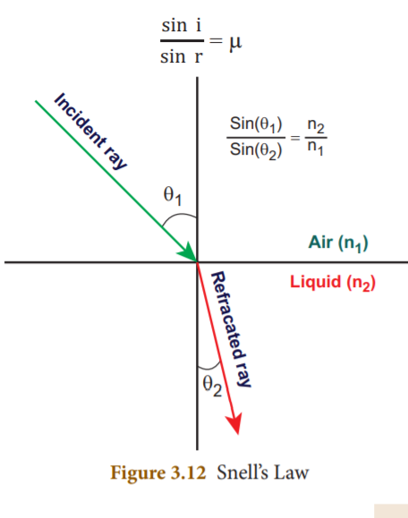
Activity 7: Place a prism on a table and keep a white screen near it. Now, with the help of a torch, allow white light to pass through the prism. What do you see? You can observe that white light splits into seven colored light rays namely, violet, indigo, blue, green, yellow, orange and red (VIBGYOR) on the screen. Now, place another prism in its inverted position, between the first prism and the screen. Now, what do you observe on the screen? You can observe that white light is coming out of the second prism.
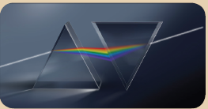
In this activity, you can see that the first prism splits the white light into seven coloured light rays and the second prism recombines them into white light, again. Thus, it is clear that white light consists of seven colours. You can also recall Newton’s disc experiment, which you studied in standard seven.
Splitting of white light into its seven constituent colours (wavelength), on passing through a transparent medium is known as dispersion of light.
Why does dispersion occur? It is because, light of different colours presents in white light have different wavelength and they travel at different speeds in a medium. You know that refraction of a light ray in a medium depends on its speed. As each coloured light has a different speed, the constituent coloured lights are refracted at different extents, inside the prism. Moreover, refraction of a light ray is inversely proportional to its wavelength.
Thus, the red coloured light, which has a large wavelength, is deviated less while the violet coloured light, which has a short wavelength, is deviated more.
Do you know?
The formation of rainbow is an example of dispersion of white light. This can be seen on the opposite side of the Sun. After rainfall, large number of droplets still remain suspended in the air. When white light passes through them, it is split into seven colours. Dispersion of white light from a large number of droplets eventually forms a rainbow.
Mirror is an optical device with a polished surface that reflects the light falling on it.
Curved mirrors have surfaces that are spherical, cylindrical, parabolic and ellipsoid.
If the curved mirror is a part of a sphere, then it is called a ‘spherical mirror’.
A spherical mirror, in which the reflection of light occurs at its concave surface, is called a concave mirror.
A spherical mirror, in which the reflection of light occurs at its convex surface, is called a convex mirror.
The focal length of a spherical mirror is half of its radius of curvature.
Real images can be formed on a screen, while virtual images cannot be formed on a screen.
Concave mirrors form a real image and it can be caught on a screen.
Concave mirrors are used as make-up mirrors.
Convex mirrors are used in vehicles as rear view mirrors.
Based on the nature of the surface, reflection can be classified into two types namely, regular reflection and irregular reflection.
The number of images formed by a mirror depends on the angle of inclination of the mirrors.
Center of Curvature- The center of the sphere from which the mirror is made.
Dispersion of light - Splitting of white light into its seven constituent colours (wavelength).
Focal length - Distance between the pole and the principal focus.
Focus - Point where the reflected rays converge at or appear to diverge from a point on the principal axis.
Kaleidoscope - Device which produces numerous and wonderful image patterns.
Periscope - Instrument used for viewing objects, which are over and around another body.
Pole - Point on the mirror’s surface where the principal axis meets the mirror.
Principal Axis - Line joining the pole of the mirror and its center of curvature.
Radius of Curvature - Distance between the center of the sphere and the vertex.
Reflection - Bouncing back of the light rays as they fall on the smooth, shiny and polished surface.
Refraction of light - Bending of light about the normal, at the point of incidence; as it passes from one transparent medium to another.
Refractive index - Ratio of the speed of light in the air to the speed of light in that particular medium.